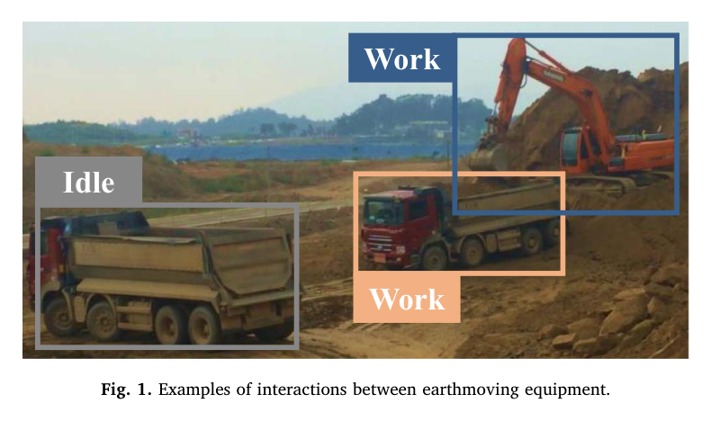
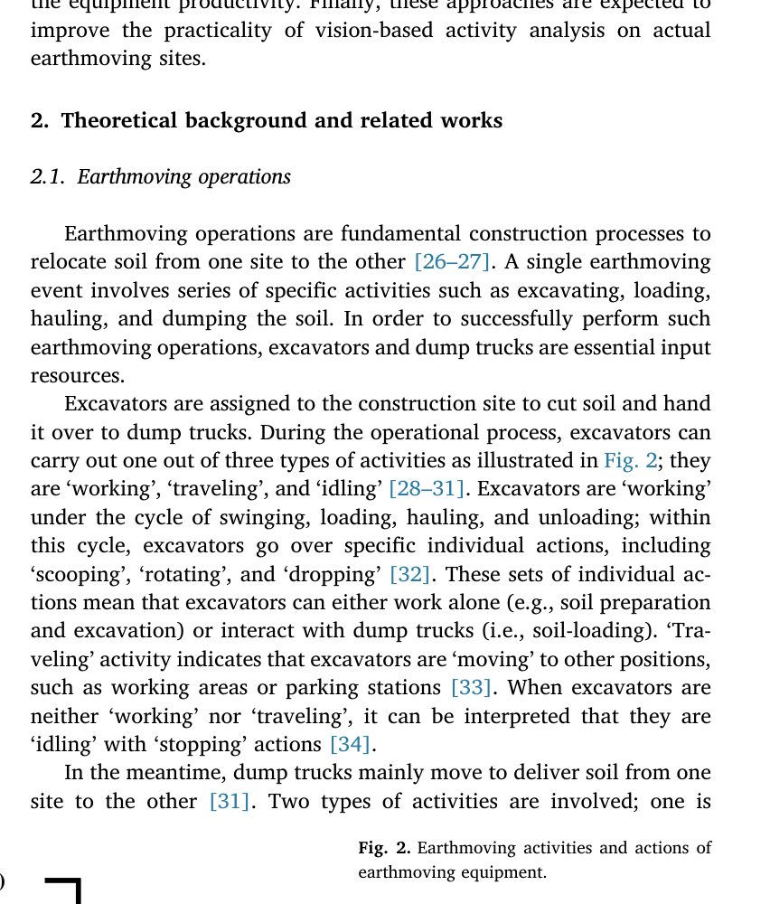
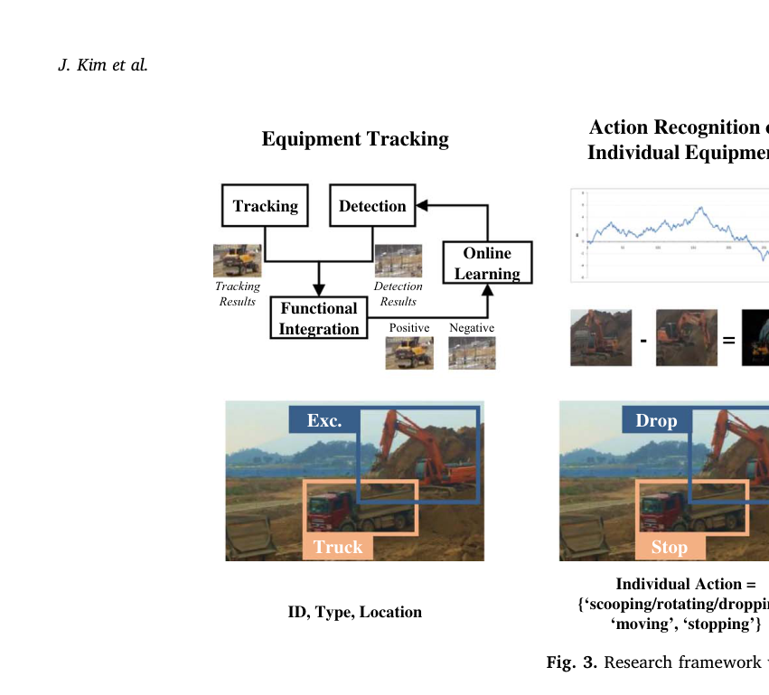
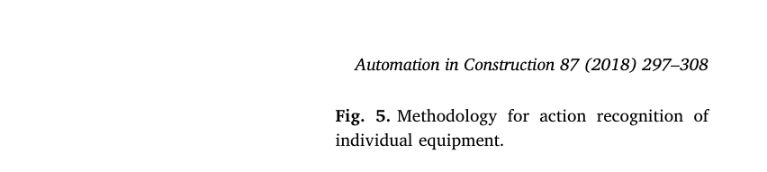
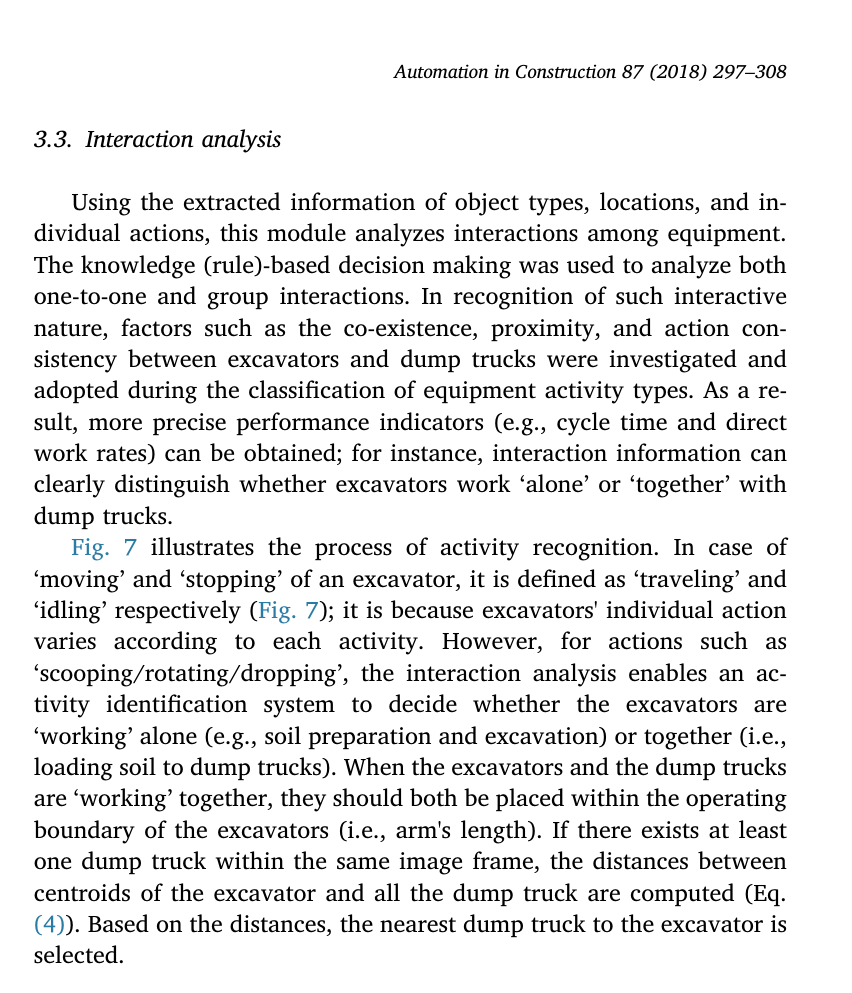
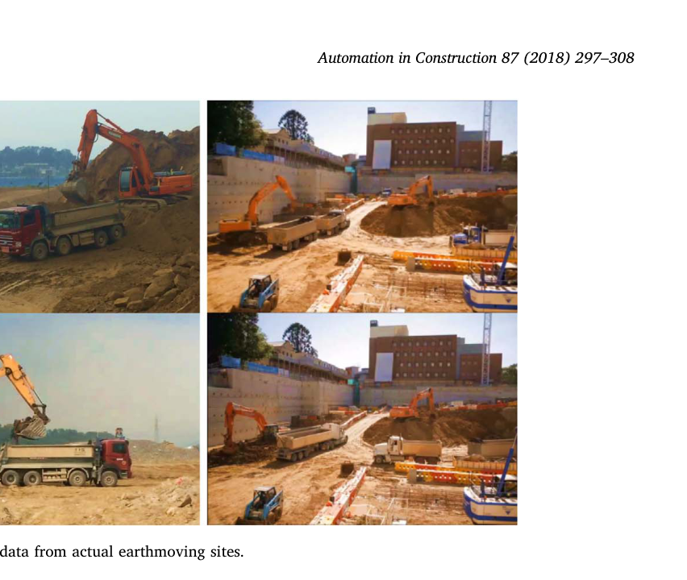
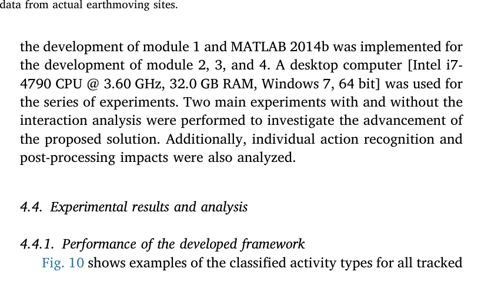
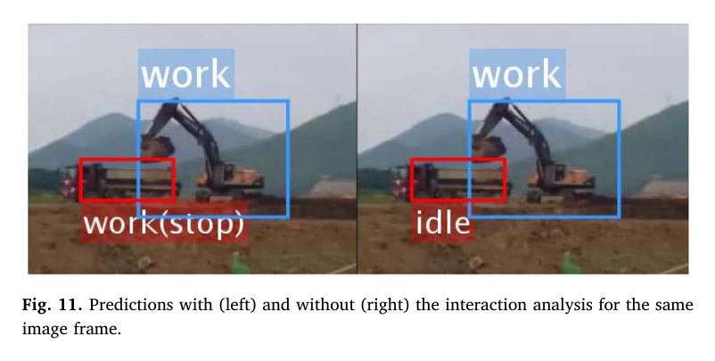
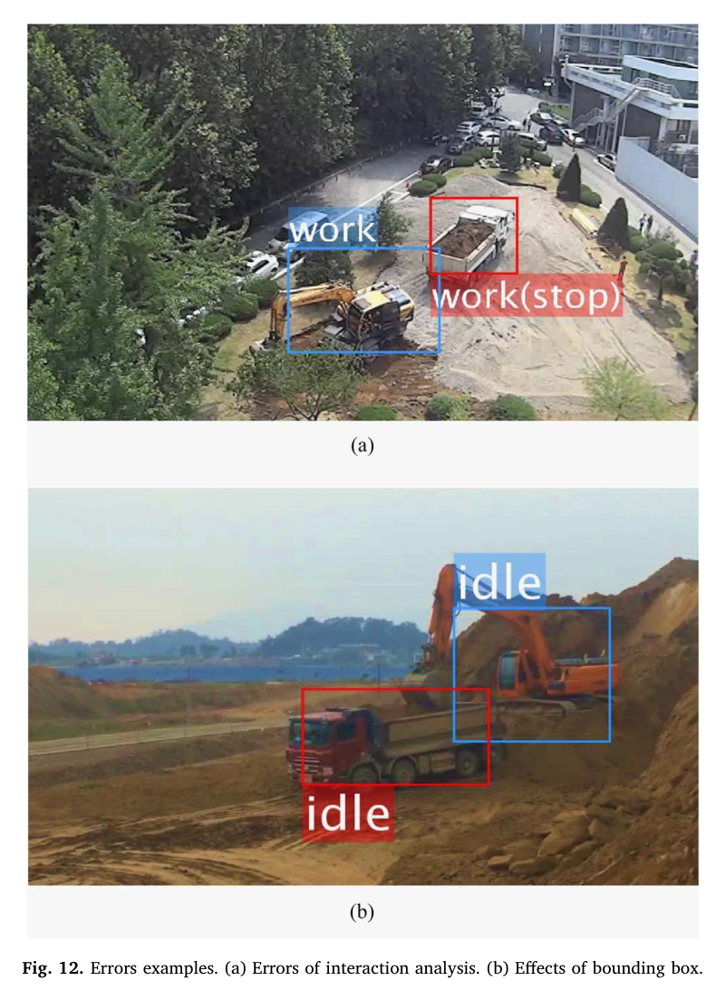

Interaction analysis for vision-based activity identification of earthmoving excavators and dump trucks
Jinwoo Kim, Seokho Chi, Jongwon Seo · Automation in Construction
한줄 요약 — 굴착기와 덤프트럭의 정지·이동·굴착 동작만 개별 판정하는 데 그치지 않고, 두 장비의 동시 존재, 작업반경 내 근접성, 행동 조합과 시간 연속성을 지식 규칙으로 결합해 실제 토공 현장의 작업·이동·대기 상태를 연속 식별하고 협업 적재와 순서 대기까지 구분한 비전 기반 프레임워크다.
1.연구 배경 및 동기
개별 장비 동작에서 협업 작업상태로
토공 생산성 분석에는 굴착기와 덤프트럭이 언제 작업하고, 이동하고, 대기했는지를 연속적으로 알아야 한다. 이 시간 기록으로 직접 작업률, 사이클 시간, 공회전 시간과 장비 배치 효율을 계산할 수 있지만, 사람이 장시간 영상을 판독하는 방식은 비용과 시간이 많이 들고 판정자 간 일관성도 낮다. RFID·GPS·UWB 같은 무선 센서는 위치와 운동을 제공하지만, 같은 위치에서 회전하는 굴착기나 적재를 기다리며 정지한 덤프트럭처럼 위치만으로 구별하기 어려운 상태가 존재한다.
기존 비전 연구도 주로 한 장비의 외형·궤적·개별 행동에 집중했다. 그러나 덤프트럭의 정지는 토사를 싣는 작업일 수도 있고 차례를 기다리는 대기일 수도 있다. 이를 구별하려면 굴착기와 트럭이 같은 화면에 있는지, 서로 굴착기 작업반경 안에 있는지, 굴착기가 굴착·회전·배출 중이고 트럭은 정지 중인지까지 함께 보아야 한다. 논문은 이 상호작용 문맥을 토공 활동 식별의 핵심 정보로 정의하고, 장비 추적부터 시간 후처리까지 하나의 규칙 기반 파이프라인으로 구성했다.

원문 Figure 1 · PDF p.2 — Fig. 1. Examples of interactions between earthmoving equipment.

원문 Figure 2 · PDF p.2 — Fig. 2. Earthmoving activities and actions of earthmoving equipment.
선행 연구의 한계
단일 장비의 위치·외형·운동만 분석하면 정지한 덤프트럭의 적재 작업과 대기를 구별하기 어렵다.
장비 간 거리만 사용하는 상호작용 모델은 여러 트럭이 굴착기 주변에서 대기하는 그룹 상호작용을 충분히 설명하지 못한다.
무선 기반 방식은 같은 위치에서 서로 다른 행동을 수행하는 장비의 세부 작업상태를 직접 관측하기 어렵다.
프레임별 독립 판정은 순간 추적 오류와 가림 때문에 실제로 지속되는 작업상태를 짧게 끊어 놓는다.
이 연구의 기여
굴착기·덤프트럭 상호작용을 공존, 근접성, 행동 일관성의 세 요소로 구조화했다.
TLD 장기 추적, 시공간 추론, 영상 차분, 지식 기반 상호작용 분석, 시간 후처리를 연결한 네 단계 프레임워크를 제안했다.
일대일 적재 관계뿐 아니라 여러 트럭 중 실제 적재 중인 트럭과 대기 트럭을 구별하는 그룹 상호작용 규칙을 구현했다.
5개 실제 토공 현장 11,513프레임을 사용해 상호작용 모듈의 정량적 효과와 실시간 처리 가능성을 검증했다.
2.방법론 및 시스템 구성
첫 단계는 확장 TLD를 이용한 다중 장비 추적이다. 사전 학습 검출기는 갑작스러운 자세·외형 변화를 프레임별로 다시 찾고, 순차 추적기는 인접 프레임의 운동과 표현 유사성을 사용해 검출 누락을 보완한다. 온라인 학습은 참양성 결과를 양성 표본으로, 오검출과 누락을 음성 표본으로 추가해 현장별 검출기를 갱신한다. 출력은 장비 ID, 종류와 2차원 위치 궤적이다.
둘째 단계는 개별 행동을 판정한다. 연속 바운딩박스 중심의 변화량을 박스 대각선 길이로 정규화해 이동 여부를 판단하고, 비이동 굴착기는 연속 영상의 픽셀 차이를 이용해 굴착·회전·배출과 완전 정지를 나눈다. 셋째 단계는 공존 여부, 굴착기와 트럭 중심 간 거리, 행동 조합을 순서대로 검사한다. 마지막으로 5초 구간 다수결을 적용해 작업 연속성과 맞지 않는 순간 오분류를 제거한다.
처리 파이프라인
1
장비 검출·장기 추적
검출기와 순차 추적기를 기능적으로 통합한 TLD로 굴착기와 덤프트럭을 장시간 추적한다. 온라인 학습으로 현장에 새로 등장한 외형과 오검출 사례를 검출기 학습 표본에 반영한다.
2
개별 행동 분류
바운딩박스 중심 변화율을 이용해 이동과 비이동을 구분한다. 굴착기는 비이동 상태에서 영상 차분을 추가해 굴착·회전·배출과 정지를 분리하고, 덤프트럭은 이동·정지의 두 행동으로 처리한다.
3
일대일 상호작용 판정
굴착기와 트럭이 같은 프레임에 존재하고, 중심 거리가 작업반경 임계값보다 작으며, 굴착기는 굴착·회전·배출 중이고 트럭은 정지 중일 때 두 장비를 함께 작업 중으로 판정한다.
4
그룹 상호작용 해석
한 굴착기 주변에 여러 트럭이 있을 때 가장 가까운 정지 트럭만 적재 작업으로 연결한다. 나머지 정지 트럭은 같은 작업구역에 있어도 적재 순서를 기다리는 대기로 분류한다.
5
시간 연속성 후처리
각 프레임의 작업·이동·대기 결과를 5초 구간 다수결로 평활화해 짧은 가림, 추적 박스 흔들림과 순간 영상 차분 오류를 줄인다.
굴착기와 덤프트럭 중심 간 2차원 거리를 계산해 작업반경 안의 가장 가까운 트럭을 상호작용 후보로 선택한다.

원문 Figure 3 · PDF p.4 — Fig. 3. Research framework with interactive operations.

원문 Figure 5 · PDF p.5 — Fig. 5. Methodology for action recognition of individual equipment.

원문 Figure 7 · PDF p.6 — Fig. 7 illustrates the process of activity recognition. In case of ‘moving’ and ‘stopping’ of an excavator, it is defined as ‘traveling’ and ‘idling’ respectively (Fig. 7); it is because excavators' individual action varies according to each activity. However, for actions such as ‘scooping/rotating/dropping’, the interaction analysis enables an ac- tivity identification system to decide whether the excavators are ‘working’ alone (e.g., soil preparation and excavation) or together (i.e., loading soil to dump trucks). When the excavators and the dump trucks are ‘working’ together, they should both be placed within the operating boundary of the excavators (i.e., arm's length). If there exists at least one dump truck within the same image frame, the distances between centroids of the excavator and all the dump truck are computed (Eq. (4)). Based on the distances, the nearest dump truck to the excavator is selected.
3.핵심 기술
행동과 활동을 분리하는 계층적 표현
논문은 영상에서 직접 관측되는 행동과 생산성 분석에 필요한 활동을 구분한다. 굴착기의 행동은 이동, 정지, 굴착·회전·배출이고 활동은 작업, 이동, 대기다. 덤프트럭은 이동과 정지 행동만으로는 작업·대기를 나눌 수 없으므로 다른 장비와의 관계를 추가한다. 이 계층화 덕분에 동일한 정지 영상도 적재 중인지 대기 중인지 다르게 해석할 수 있다.
굴착기는 이동이면 이동 활동, 정지이면 대기, 굴착·회전·배출이면 작업으로 연결한다.
덤프트럭의 이동은 토사 운반 작업으로 간주하지만 정지는 상호작용 분석을 거쳐 작업 또는 대기로 나눈다.
굴착기가 단독 굴착 중인지 트럭에 적재 중인지도 같은 규칙에서 구별할 수 있다.
공존·근접·행동 일관성의 결합
단순히 같은 화면에 있거나 가까운 장비를 모두 협업으로 보지 않는다. 실제 적재는 굴착기와 트럭이 공존하고, 굴착기 팔 길이에 해당하는 유효 거리 안에 있으며, 굴착기는 굴착·회전·배출을 수행하고 트럭은 정지하는 행동 일관성이 동시에 성립해야 한다. 세 조건의 결합은 멀리 떨어진 정지 트럭이나 작업을 멈춘 굴착기 주변의 트럭을 잘못 연결하는 사례를 줄인다.
실험 영상에서 근접 임계값은 촬영 조건에 따라 150픽셀과 200픽셀로 최적화됐다.
굴착기 이동 임계값은 초당 2프레임 조건에서 프레임당 10%, 트럭은 20%로 설정됐다.
한 굴착기에 여러 트럭이 접근하면 최근접 트럭을 작업 대상으로 선정해 그룹 대기를 해석한다.
현장 적응형 추적과 시간 평활화
TLD의 검출·추적 상호 보완과 온라인 표본 갱신은 색상, 형상, 방향과 속도가 크게 변하는 건설장비를 고정 카메라에서 장시간 유지하기 위한 장치다. 여기에 5초 다수결을 적용해 실제 활동이 일정 시간 지속된다는 현장 지식을 반영한다. 즉 공간 문맥뿐 아니라 짧은 시간 문맥도 명시적으로 사용한다.
원문 Figure 8 · PDF p.7 — Fig. 8. Concept for post-processing.
4.실험 결과
실험 환경·장비·데이터
CCTV와 스마트폰으로 5개 실제 토공 현장을 촬영하고, 서로 다른 11개 카메라 위치를 사용했다.
카메라는 장비에서 10~30m 떨어진 위치, 높이 0~3m, 정면·후면·측면·대각 시점에 설치됐다.
총 11,513프레임, 약 150분의 작업 영상을 720×1280 또는 1080×1920 해상도로 수집했다.
Caterpillar, Doosan, Hyundai, Scania, Volvo 등 다양한 제조사의 굴착기와 덤프트럭이 포함됐다.
구현 환경은 Visual Studio 2012의 C++ 추적 모듈, MATLAB 2014b의 행동·상호작용·후처리 모듈, Intel i7-4790 3.60GHz와 32GB RAM의 Windows 7 PC였다.
실험 프로토콜
상호작용 모듈을 포함한 전체 프레임워크와 모듈 3을 제거한 구성을 동일 데이터에서 비교했다.
후처리 포함·제거 조건을 비교해 5초 다수결의 기여를 측정했다.
장비 추적, 개별 행동 인식, 최종 활동 식별을 각각 정밀도와 재현율로 평가했다.
예측된 작업·이동·대기 시간과 사람이 확인한 실제 시간을 비교해 시간 추정 오차를 계산했다.
비교 기준
상호작용 분석 없이 정지 트럭을 대기로 처리하는 구성
5초 다수결 후처리를 제거한 프레임별 독립 판정
개별 행동 인식과 TLD 추적 모듈의 독립 성능
평가 지표
활동 식별 정밀도와 재현율
굴착기·덤프트럭별 작업·이동·대기 클래스 성능
장비 추적 및 개별 행동 인식 정밀도·재현율
실제 활동시간 대비 추정시간 오차율
프레임당 처리시간

원문 Figure 9 · PDF p.8 — Fig. 9. Examples of the collected data from actual earthmoving sites.
핵심 결과 해석
전체 프레임워크의 평균 정밀도는 91.27%, 재현율은 92.42%였다. 상호작용 분석을 제거하면 각각 75.68%와 74.72%로 하락해, 개별 행동보다 관계 문맥이 특히 덤프트럭 상태 해석에 중요함을 보였다. 상호작용이 없을 때 트럭 대기 상태의 정밀도는 38.91%까지 떨어지고 트럭 작업 재현율도 23.92%에 머물렀다. 반면 굴착기는 개별 행동만으로 활동을 비교적 직접 연결할 수 있어 상호작용 모듈 제거의 영향이 작았다.
프레임당 처리시간은 0.1~0.3초였고, 활동시간 평균 오차는 5.4%였다. 후처리는 정밀도 3.88%p, 재현율 4.15%p를 추가로 높였다. 정성적으로도 가까운 두 트럭 가운데 실제 적재 중인 한 대만 작업으로, 나머지는 대기로 판정했으며, 짧은 2초 가림은 시간 연속성으로 보완했다. 다만 5초보다 긴 가림과 잘못된 작업 대상 연결은 해결하지 못했다.
정량 결과
평가 항목
정량 결과
조건·맥락
원문 근거
전체 활동 식별 정밀도
91.27%
상호작용 분석과 5초 후처리를 포함한 전체 프레임워크
PDF p.9
전체 활동 식별 재현율
92.42%
상호작용 분석과 5초 후처리를 포함한 전체 프레임워크
PDF p.9
상호작용 제거 시 정밀도
75.68%
정지 트럭의 적재·대기 문맥을 사용하지 않은 조건
PDF p.9
상호작용 제거 시 재현율
74.72%
전체 프레임워크보다 17.70%p 감소
PDF p.9
활동시간 추정 평균 오차
5.4%
실제 작업시간 대비 작업·이동·대기 시간 추정
PDF p.9
프레임당 처리시간
0.1~0.3초
지정 데스크톱 환경의 단일 프레임 분석
PDF p.9
후처리 성능 이득
정밀도 +3.88%p, 재현율 +4.15%p
5초 다수결 적용 전후 비교
PDF p.9
실패 사례와 경계조건
이미 적재를 마친 트럭이 작업반경 안에서 정지하고 다른 트럭을 위한 굴착이 진행되면, 세 상호작용 조건이 모두 성립해 잘못 작업으로 연결될 수 있다.
바운딩박스가 버킷·암·본체 전체를 덮지 못하면 영상 차분이 실제 굴착 형상 변화를 놓치고 굴착기를 정지로 오분류한다.
배경 물체가 바운딩박스 안에서 움직이면 굴착기 자체의 변화로 해석될 수 있다.
5초를 넘는 장기 가림에서는 후처리만으로 장비 활동을 연속 복원할 수 없다.
2차원 거리 임계값은 카메라 시점과 원근 변화에 민감하다.

원문 Figure 10 · PDF p.8 — Fig. 10 shows examples of the classified activity types for all tracked

원문 Figure 11 · PDF p.9 — Fig. 11. Predictions with (left) and without (right) the interaction analysis for the same image frame.

원문 Figure 12 · PDF p.10 — Fig. 12. Errors examples. (a) Errors of interaction analysis. (b) Effects of bounding box.
5.한계 및 향후 연구
현재 한계
고정 단안 카메라의 2차원 위치에 의존해 시점 변화와 화면 수직 방향 이동을 정확히 복원하지 못한다.
이동·근접·영상 차분 임계값을 실험 영상에 맞춰 수동 최적화했으므로 새 현장과 카메라에서 재조정이 필요하다.
장기 가림, 야간·저조도, 큰 조명 변화에 대한 검증이 없다.
상호작용 규칙은 적재시간이나 트럭 적재 완료 상태를 직접 추정하지 않아 잘못된 장비 연결이 발생할 수 있다.
CNN 기반 최신 검출·추적보다 TLD와 수작업 규칙에 의존하며, 광범위한 외형 변화의 일반화가 제한된다.
향후 연구
CNN 기반 추적기를 도입해 굴착기 전체 형상과 버킷 가림에 대한 추적 안정성을 높인다.
단안 2차원 중심 대신 3차원 전역 위치를 사용해 시점 변화에 강한 작업반경 판정을 구현한다.
GPS 등 무선 센서와 영상을 융합해 카메라 밖으로 나가는 트럭과 장기 가림 구간을 연결한다.
야간 조명과 저조도 환경에 맞춘 비전 모듈을 개발한다.
토질, 토량, 운전자 숙련도와 장비 제원을 활동 로그에 결합해 생산성과 장비 배치 의사결정까지 확장한다.
6.한마디로 정리
핵심 방법은?
TLD 추적과 영상 차분으로 개별 행동을 얻고, 공존·근접성·행동 일관성 및 5초 시간 연속성을 규칙으로 결합한다.
핵심 결과는?
실제 현장 11,513프레임에서 상호작용 분석이 평균 정밀도를 75.68%에서 91.27%, 재현율을 74.72%에서 92.42%로 높였다.
한계는?
2차원 고정 시점과 수동 임계값, 장기 가림 및 적재 완료 상태 미추정 때문에 새로운 현장에 그대로 전이하기 어렵다.
#환경인식#안전·HRI#시스템통합·현장실증#TLD 검출·추적#영상 차분#시공간 규칙#지식 기반 상호작용 분석
나의 의견 / 우리 연구와의 연관성
이 연구는 자율작업 장비의 상태 추정을 개별 객체 분류가 아니라 다중 장비 관계 추론 문제로 다룬 초기 사례다. 자율 굴착 시스템에서도 굴착기 자체 관절 상태만으로 작업 단계를 판단하지 않고 트럭의 위치·대기열·행동을 함께 사용하면 적재 전환과 작업 완료를 더 안정적으로 판정할 수 있다.
현대 시스템에서는 TLD와 수작업 임계값을 3차원 검출·추적, 장비 V2X, 작업 그래프 모델로 대체할 수 있지만, 공존·근접·행동 일관성이라는 명시적 관계 구조는 안전 검증과 오류 설명에 여전히 유용하다.
굴착기-트럭 협업 상태를 자율 작업계획기의 이산 상태 전이 조건으로 사용할 수 있다.
작업·대기 시간 로그는 장비 배차, 매칭 팩터와 생산성 최적화의 관측값이 된다.
카메라와 GNSS·V2X를 결합하면 장기 가림과 카메라 시야 밖 운반 구간을 보완할 수 있다.
규칙 기반 상호작용 결과를 학습 모델의 약한 라벨 또는 설명 가능한 안전 감시기로 활용할 수 있다.
7.전체 그림·표
본문 핵심 위치에 배치하지 않은 원문 Figure와 Table을 원문 페이지 순서로 수록한다.